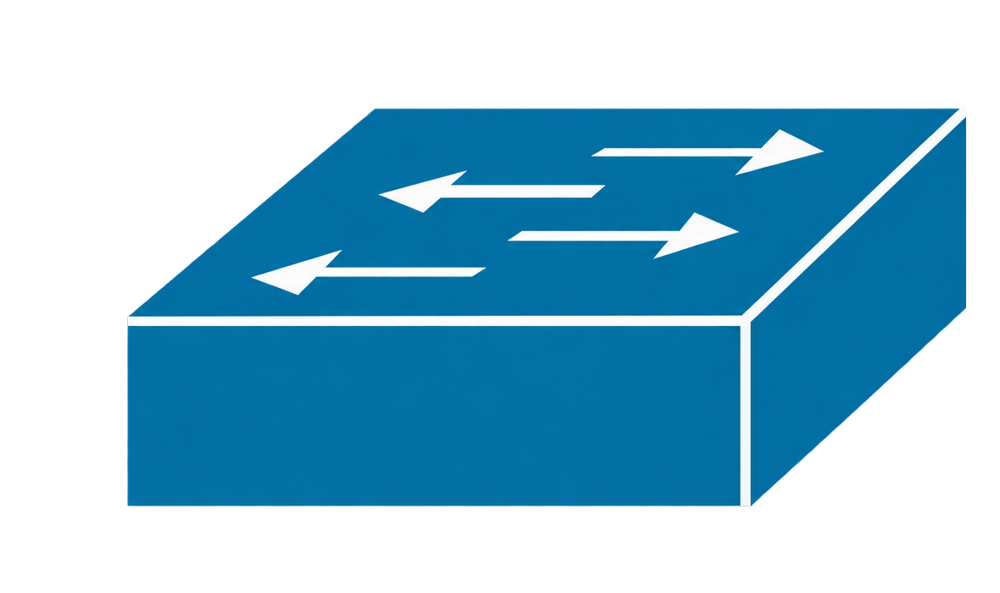

Módulo 04
Configuración y verificación.
Ahora elegirás el Root Switch de cada VLAN y prepararás de forma segura los puertos donde se conectan computadores u otros equipos finales.
Punto de partida de la práctica
Desde este punto, la guía asume que ya tienes una topología armada, con las VLANs 10, 20, 30 y 40 creadas y los enlaces entre switches configurados como trunks. No volveremos a construir esas configuraciones: aquí nos concentraremos solamente en Spanning Tree.
Si aún no tienes estas configuraciones, revisa primero:
Aunque no configures nada adicional, STP elegirá un Root Switch de forma automática. En esta práctica tomarás el control de esa elección para que los caminos de la red sean más predecibles.

SW1Root: VLAN 10 y 20Los cuatro enlaces del cuadrado son trunks. Los PC se conectan a puertos de acceso: PC 1 pertenece a la VLAN 10, PC 2 a la VLAN 20, PC 3 a la VLAN 30 y PC 4 a la VLAN 40. La conexión redundante del cuadrado permite observar cómo STP deja un camino alternativo sin crear un bucle.
En los módulos anteriores viste cómo se realiza la elección. Ahora
aplicarás ese conocimiento primero con una prioridad manual y luego
con las opciones root primary y
root secondary.
Activar PVST y revisar una VLAN
Switch> enable # entra al modo privilegiado
Switch# configure terminal # abre la configuración global
Switch(config)# spanning-tree mode pvst # usa una instancia de STP por VLAN
Switch(config)# end # vuelve al modo privilegiado
Switch# show spanning-tree vlan 10 # muestra el Root Switch, costos, roles y estados de la VLAN 10Este comando es como preguntarle al switch: “¿quién es el Root Switch de esta VLAN y qué tarea cumple cada puerto?” En la respuesta, busca Root ID. También podrás reconocer el Root Port y los puertos que están reenviando o bloqueando tráfico.
Elegir el Root Switch mediante prioridad
Puedes entregar un puntaje concreto al switch. En el ejemplo, recibe prioridad 4096 para la VLAN 10. Como un número menor tiene preferencia, este switch tendrá muchas posibilidades de convertirse en Root Switch.
Switch# configure terminal # abre la configuración global
Switch(config)# spanning-tree vlan 10 priority 4096 # entrega prioridad a este switch para la VLAN 10Usar roles primary y secondary
Existe una forma más directa. Con root primary indicas que
quieres ese equipo como Root Switch principal. Con
root secondary lo preparas como reemplazo por si el
principal deja de estar disponible. En este ejemplo, SW1 será el Root
Switch de las VLANs 10 y 20, y el respaldo de las VLANs 30 y 40.
# configuración aplicada en SW1
SW1(config)# spanning-tree vlan 10 root primary # SW1 será el Root Switch principal de la VLAN 10
SW1(config)# spanning-tree vlan 20 root primary # SW1 será el Root Switch principal de la VLAN 20
SW1(config)# spanning-tree vlan 30 root secondary # SW1 queda como respaldo de la VLAN 30
SW1(config)# spanning-tree vlan 40 root secondary # SW1 queda como respaldo de la VLAN 40En SW2 hacemos lo contrario. De esta forma, cada VLAN tiene un Root Switch principal y otro switch listo como respaldo.
# configuración complementaria aplicada en SW2
SW2(config)# spanning-tree vlan 30 root primary # SW2 será el Root Switch principal de la VLAN 30
SW2(config)# spanning-tree vlan 40 root primary # SW2 será el Root Switch principal de la VLAN 40
SW2(config)# spanning-tree vlan 10 root secondary # SW2 queda como respaldo de la VLAN 10
SW2(config)# spanning-tree vlan 20 root secondary # SW2 queda como respaldo de la VLAN 20Proteger puertos de acceso
Imagina PortFast como una puerta rápida para equipos conocidos. Se usa en puertos de acceso conectados a computadores o impresoras y permite que comiencen a comunicarse sin esperar el proceso normal de STP.
BPDU Guard funciona como un guardia en esa puerta. Si detecta que conectaron un switch en un puerto destinado a un computador, apaga el puerto para evitar que esa conexión cambie o dañe la topología.
Switch(config)# interface fastEthernet 0/10 # selecciona un puerto conectado a un equipo final
Switch(config-if)# switchport mode access # establece el puerto como acceso
Switch(config-if)# spanning-tree portfast # permite que el puerto comience a reenviar con rapidez
Switch(config-if)# spanning-tree bpduguard enable # protege el puerto si recibe una BPDU
Switch(config-if)# exit # vuelve a la configuración globalComprobar el resultado
Revisa una VLAN a la vez. Confirma que aparezca el Root Switch que elegiste y busca el Root Port de los demás switches. Si hay caminos de respaldo, es normal que uno de los puertos no reenvíe tráfico: STP lo mantiene preparado para evitar el bucle.
SW1# show spanning-tree summary # resume el modo STP y sus instancias activas
SW1# show spanning-tree vlan 10 # verifica el Root Switch y los puertos de la VLAN 10
SW1# show spanning-tree vlan 20 # repite la comprobación para la VLAN 20
SW2# show spanning-tree vlan 30 # verifica el Root Switch y los puertos de la VLAN 30
SW2# show spanning-tree vlan 40 # repite la comprobación para la VLAN 40
SW1# show spanning-tree interface fastEthernet 0/10 detail # revisa STP, PortFast y BPDU Guard en el puerto de acceso